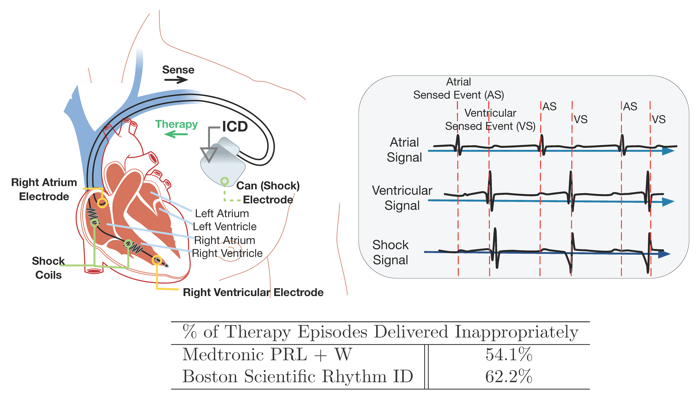
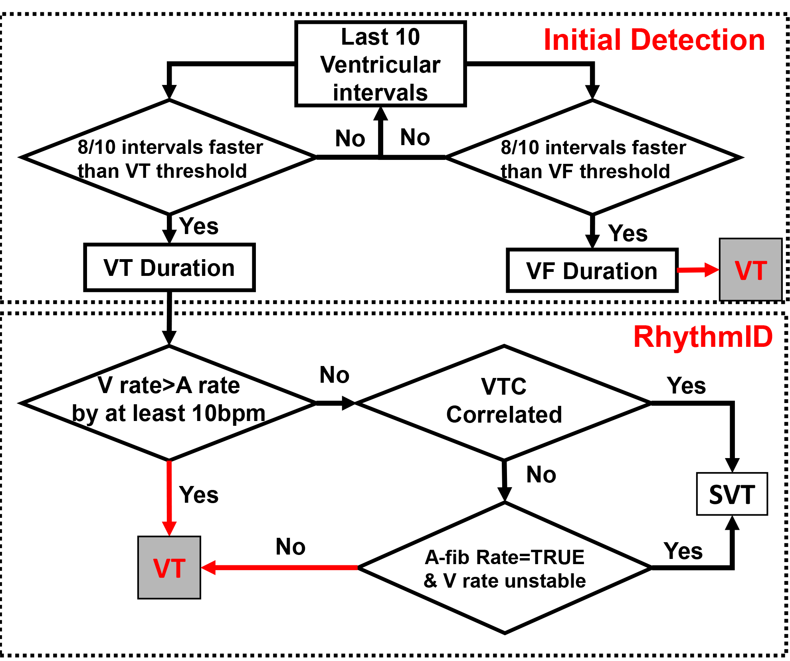
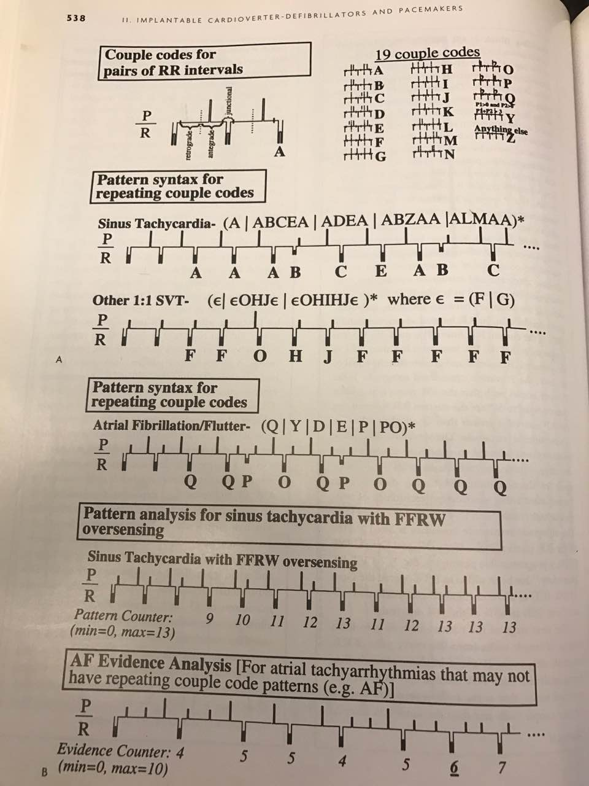
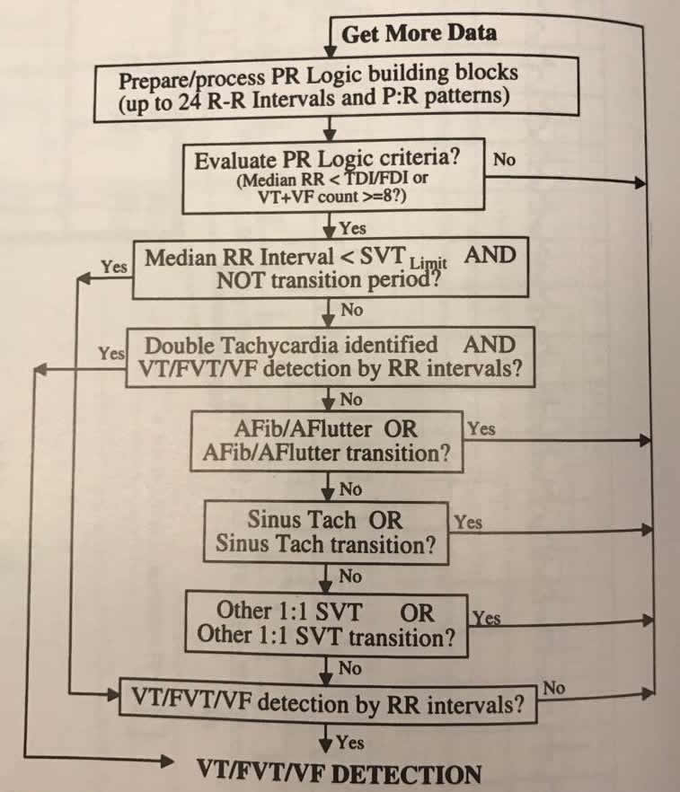

Implantable Cardioverter Difibrillators (ICDs) are designed to identify fatal heart conditions like Ventricular Tachycardia (VT) and deliver electrical shock to restore normal heart rhythm. A typical ICD has two leads inserted into the heart which measure local electrical activities in the right atrium and right ventricle, respectively. The electrical signals are referred to as Electrograms (EGMs).

Based on the timing and morphology of the EGMs, the ICD needs to distinguish between fatal Ventricular Tachycardia (VT) and non-fatal Supra-Ventricular Tachycardia (SVT). It is important to deliver therapy for all VTs, but therapies delivered during SVTs are considered as inappropriate. Inapprppriate shocks are decrimental to patient health and device manufacturers have developed algorithms to reduce the frequency of inappropriate therapies.
We have implemented the VT/SVT discrimination algorithm from two major ICD manufacturers, and by sharing them we hope to encourage researchers to develop better VT/SVT algorithms. In each algorithm description, we start by introducing the clinical features that the algorithm looks for and why, and then go into the implementation details. The Matlab function for RhythmID and PRLogic and a starter kit can be downloaded here.
RhythmID is a very straightfoward algorithm and has been working very well in most heart conditions.
The readers should keep in mind that none of these features can 100% distinguish VT/SVT on its own.
High ventricular rate is a strong indication of VT. The RhythmID algorithm use the last 10 intervals between consecutive ventricular beats to determine whether the current rhythm is SVT, VT, or even faster VF. Depending on the setting, ventricular rate can be divided into 2 zones (VT/VF) or 3 zones (VT/fast VT/VF). In this study we only consider 2 zones. If the ventricular rate is above the VF threshold, the ICD will deliver therapy immediately without checking whether the ryhthm is SVT, otherwise the algorithm looks for other signs of SVT to potentially inhibit therapy.
There are cases called non-sustained VT, in which the ventricular rate is only fast for less than say, 30 sec. ICD should not deliver therapy in these scenarios. Therefore in VT/SVT algorithms there are always a timing period in which the ventricular rate has to stay fast before the algorithm decide whether to deliver therapy. In Rhythm ID this period is called VT and VF Duration, respectively.
During most VTs, the intervals between consecutive ventricular contractions remain mostly constant since the fast beats are generated from the same reentry circuit. On the contrary, during SVTs like AF, the AV node prevents certain fast atrial events from entering the ventricles, resulting unstable ventricular rate. Therefore, unstable ventricular rate is an important sign of SVT.
During SVT, the atrial rate is fast. However, the atrial rate is also fast in some VTs, like double tachycardia. Therefore fast atrial rate is an important sign of SVT but other factors have to be taken into account to confirm SVT.
Far-field ventricular EGM is measured from the ring of the shock coil on the ventricular lead to the ICD can. Due to the relatively longer distance betwen 2 electrodes, far-field ventricular EGM contains information of the direction of the electrical conductions within the heart, which is similar to the ECG signals. During NSR and SVT, electrical signals originate from above the ventricles, and travel to the ventricles through the AV node-His-Pukinje pathway. Therefore, the far-field ventricular EGM morphology during NSR and SVT are very similar. On the other hand, during VT the signals originate from the ventricles, resulting in different conduction pattern and different far-field ventricular EGM morphology. RhythmID utilize this feature to distinguish VT/SVT. The readers should know that there are rare cases in which the far-field EGM morphology during SVT is different than the ones during NSR, and also cases in which the morphology during VT is similar to the ones during NSR.
RhythmID utilize a combination of the features described above. The decision flow to determine whether a rhythm is VT or SVT is shown below:

Now we walk through the code for better understanding.
Inputs
A_sense: Boolean, sensed atrial event after sensing
V_sense: Boolean, sensed ventricular event after sensing
V_shock: Integer, far-field ventricular EGM
Outputs
inhibit: Boolean, whether therapy is inhibited at a particular time.
therapy: Boolean, whether therapy is delivered at a particular time.
ICD States
A_clk: integer. The time (in msec) since the last atrial event, resets when A_sense=1
V_clk: integer. The time (in msec) since the last ventricular event, resets when V_sense=1
A_win: 10*1 integer array. The last 10 intervals between consequtive atrial events. Updated for every new atrial events as FIFO.
V_win: 10*1 integer array. The last 10 intervals between consequtive ventricular events. Updated for every new ventricular events as FIFO.
VTC_morph: 200*1 integer array. The rolling window of far-field ventricular morphology
NSR_temp:
VTC_win: 10*1 integer array. The type of the last 10 far-field ventricular morphology, 1 for NSR and 2 for non-NSR.
VTduration: boolean. Whether the ICD is during the VT duration.
VFduration: boolean. Whether the ICD is during the VF duration.
VTdur_count: integer. The time (in msec) since the ICD entered VT duration.
VFdur_count: integer. The time (in msec) since the ICD entered VF duration.
Algorithm flow
At each time stamp (1msec):
When A_sense==true:
When V_sense==true:
100msec after V_sense==true
During VF duration
During VT duration
Compared to RhythmID, the PRLogic by Medtronic is a much more complex and less intuitive algorithm.
There are some similarities between the clinical features used in PRLogic and RhythmID. However, there are features in PRLogic that are not considered in RhythmID. For the ones that are similar in principle, we will focus on their differences in implementation.
A sustained fast ventricular rate is obviously a strong indication of VT. In PRLogic, the implementation is slightly different. Instead of looking at the ventricular rate in a detection period and a duration, PRLogic looks at the ventricular rate during a longer period of time. An episode has to have 18 consecutive fast ventricular intervals to be considered as VT, and 18/24 very fast ventricular intervals to be considered as VF.
A fast atrial rate is a strong indication of SVT. In PRLogic, atrial rate is considered together with ventricular rate to consider whether an episode is SVT.
This feature is similar to the ventrcular rate stability in RhythmID. PRLogic looks at the last 18 ventricular intervals and creates a histogram for interval 230:10:400. If the number of the intervals which fall into the 2 most dominant categories are larger than 14, the rhythm is considered as regular.
The correlation between atrial and ventricular events is a good indication of the direction the signal is traveling. i.e. from atrial to ventricle or vice versa. For each ventricular event, PRLogic looks at whether there exists atrial event(s) before it and the timing relationship between the last atrial event and the ventricular event, to determine whether the atrial event is "associated" with the ventricular event.
The pattern of atrial and ventricular events contains vital information on whether an episode is SVT or VT. RhythmID does not consider PR pattern at all. In PRLogic the PR pattern is the most complex component are is the key to determine different rhythms. For each two ventricular intervals, PRLogic looks at how many atrial events are within these intervals and the timing relations with the ventricular events. There are 19 couple codes which are shown below. PRLogic then use the sequence of couple codes to categorize the rhythm.

Inputs
A_sense: Boolean, sensed atrial event after sensing
V_sense: Boolean, sensed ventricular event after sensing
V_shock: Integer, far-field ventricular EGM
Outputs
inhibit: Boolean, whether therapy is inhibited at a particular time.
therapy: Boolean, whether therapy is delivered at a particular time.
ICD States
A_clk: integer. The time (in msec) since the last atrial event, resets when A_sense=1
V_clk: integer. The time (in msec) since the last ventricular event, resets when V_sense=1
A_win: 10*1 integer array. The last 10 intervals between consequtive atrial events. Updated for every new atrial events as FIFO.
V_win: 24*1 integer array. The last 24 intervals between consequtive ventricular events. Updated for every new ventricular events as FIFO.
shock_buf: 200*1 integer array. The rolling window of far-field ventricular morphology
VTC_win: 10*1 integer array. The type of the last 10 far-field ventricular morphology, 1 for NSR and 2 for non-NSR.
NOA_win: 5*1 integer array. The number of atrial events between each of the last 5 ventricular intervals
PRpattern: 5 letter string. The last 5 couple codes
PRwin: 5*1 integer array. The last 5 intervals between each ventricular event to the last atrial event. The number is Inf if there is no atrial events during the interval.
PRassociate: 8*1 boolean array. Whether the last 8 A-V event pairs are correlated.
FFRW_win: 12*1 boolean array. Whether the last 12 ventricular intervals have potential far-field R-wave oversensing
FFRW: integer. The number of potential far-field R-wave oversensing in the last 12 ventricular intervals.
LastRR: integer array. The time since the last ventricular event before atrial event(s) happened.
SecondLastRR: The time since the second last ventricular event before atrial event(s) happened.
Algorithm flow
At each time stamp (1msec):
When A_sense==true:
When V_sense==true:
The decision tree of PRLogic is shown below. Note that unlike in RhythmID which checks VT/VF first and then SVT, PRLogic checks all potential SVTs before checking VT/VT.
